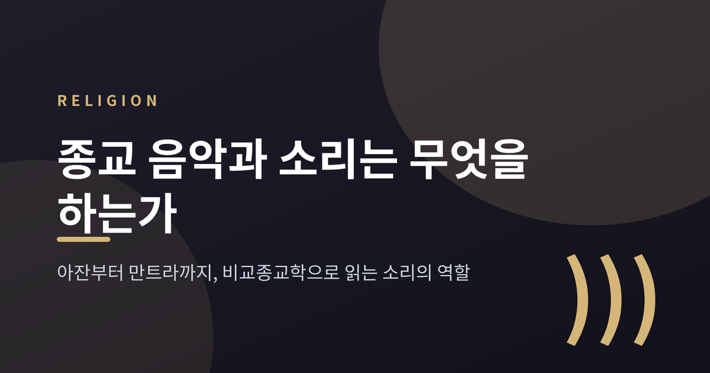
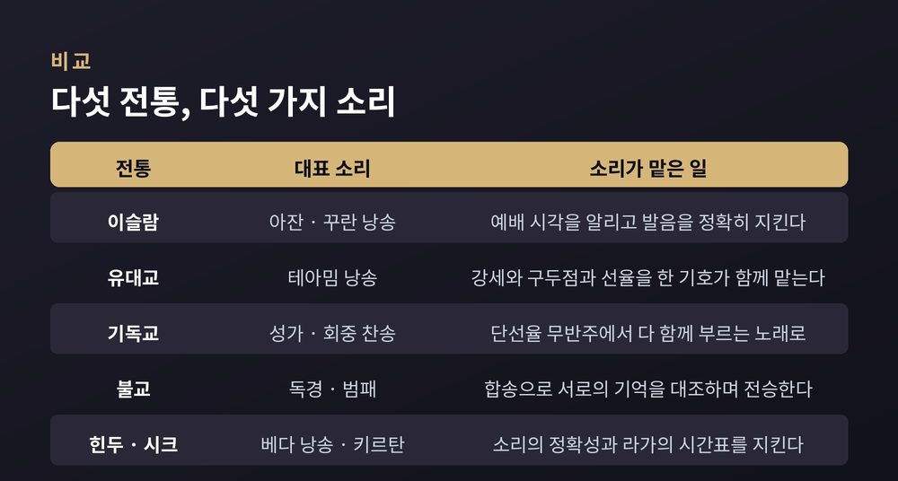
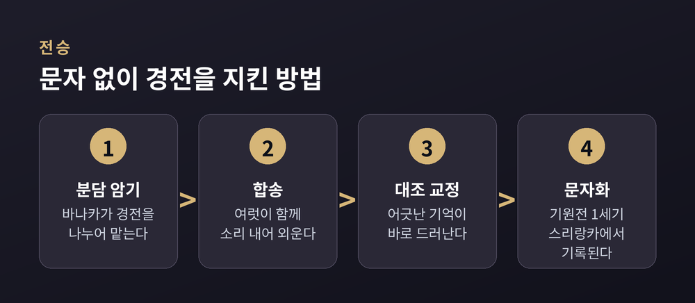

이번 글에서는 세계 종교가 소리를 다루는 방식을 비교종교학의 눈으로 정리해 보겠습니다. 아잔과 찬송, 독경과 만트라는 겉으로는 전혀 다른 소리지만, 하는 일은 놀랄 만큼 겹칩니다. 어느 신앙이 옳은지를 가리는 글이 아니라, 사람들이 소리로 무엇을 해왔는지를 살피는 글입니다.

이슬람의 아잔(adhan)은 의무 예배 시각이 되었음을 알리는 호출입니다. 하루 다섯 번, 세계 각지의 모스크에서 울립니다.
소리를 내는 사람은 무앗진입니다. 무앗진은 "악기 같은 목소리", 곧 듣는 이를 압도하는 목소리를 기준으로 뽑힙니다. 그런데도 아잔은 음악 그 자체로 분류되지 않습니다. 목적이 감상이 아니라 알림과 신앙 실천에 있기 때문입니다.
꾸란 낭송도 마찬가지입니다. 낭송의 규칙 체계를 타즈위드(tajwīd)라고 부릅니다. 타즈위드는 글자 하나하나를 정확히 발음하게 만드는 학문입니다. 소리가 아름다워지는 것은 결과이고, 본래 목적은 발음 실수로 메시지가 왜곡되는 일을 막는 데 있습니다.
낭송 양식은 크게 둘로 나뉩니다. 담백하고 절제된 무랏탈(murattal), 그리고 선율성과 기교가 두드러지는 무자와드(mujawwad)입니다.
이 구분을 설명할 때 종교학에서 자주 쓰이는 개념이 한다사 알사우트(handasah al-sawt)입니다. '소리의 예술'이라는 뜻으로, 이슬람 문화권에서 나온 음과 리듬의 예술적 배열 전부를 가리킵니다. 반면 무시카(musiqa)는 그중 특정 장르에만 붙는 좁은 말입니다.
연구자 알파루키는 이 소리 예술들을 꾸란과의 연속성에 따라 위계로 배열했습니다. 꾸란 낭송이 중심에 있고, 세속적 주제와 악기를 쓰는 노래가 가장 바깥에 놓입니다.
이슬람에서 음악의 허용 범위는 논쟁적인 주제입니다. 이 논쟁은 수 세기 동안 이어졌고, 한 번도 만장일치로 마무리된 적이 없습니다.
순니 4대 법학파 사이에도 보편적 합의는 없습니다. 한발리 계열은 악기를 언급한 하디스를 근거로 금지 쪽에 기울고, 샤피이 계열도 비교적 엄격한 편입니다. 반면 하나피와 말리키 전통은 조건부 허용 쪽에 가깝습니다.
조건부 허용을 말한 대표적 인물이 알가잘리입니다. 그는 음악이 영혼을 고양시킬 수 있음을 인정하고, 허용 여부는 내용과 맥락에 달렸다고 보았습니다. 알다하비 역시 목적이 부도덕하지 않고 부도덕한 요소와 섞이지 않았다면 허용된다고 정리했습니다.
실천의 영역에서는 수피 전통이 두드러집니다. 남아시아에서 지역화된 수피 음악인 카왈리, 그리고 신의 이름을 되뇌는 디크르 의례가 그렇습니다. 여기서 소리는 금기가 아니라 도구입니다.
정리하면 이렇습니다. "이슬람은 음악을 금한다"도, "이슬람은 음악을 허용한다"도 모두 정확하지 않습니다. 합의가 없다는 사실 자체가 확인된 사실입니다.
유대교 회당에서 히브리 성서를 읽는 방식을 칸틸레이션이라고 부릅니다. 히브리어로는 테아밈(teʿamim)입니다.
테아밈은 흥미로운 체계입니다. 하나의 기호가 세 가지 일을 동시에 합니다. 강세를 표시하고, 문장의 구조를 나누고, 선율을 지시합니다. 문법과 음악이 한 벌의 기호 안에 들어 있는 셈입니다.
이 기호들은 마소라 본문에 인쇄되어 있고, 지금의 체계는 티베리아의 마소라 학자들 사이에서 다듬어졌습니다.
전통은 하나가 아닙니다. 공동체마다 갈래가 다르고, 같은 공동체 안에서도 성서의 권마다 절기마다 다른 선율을 씁니다. 하잔(칸토르)이나 공동체 지도자가 성인식을 앞둔 아이에게 자기 공동체의 선율을 가르칩니다. 전승이 세대 단위로 손에서 손으로 넘어갑니다.
기독교 쪽으로 넘어가 보겠습니다. 그레고리오 성가는 단선율에 무반주, 라틴어로 부르는 플레인챈트입니다. 정해진 박자 없이 선법 위에서 움직입니다.
서양 플레인챈트의 형성기는 5세기에서 8세기로 봅니다. 지금 우리가 아는 형태는 9~10세기에 자리를 잡았습니다. 이 과정에서 초기 기보법인 네우마가 만들어졌고, 서양 음악 기보법 전체가 여기서 출발합니다.
예전엔 노래하는 쪽이 성직자와 성가대였습니다. 지금처럼 회중 전체가 함께 부르는 형태는 종교개혁기 독일 루터교회에서 다시 확립되었습니다.
루터와 요한 발터의 1524년 모음집, 게오르크 라우의 1544년 모음집이 초기의 중요한 결과물입니다. 루터에게 귀속되는 독일어 찬송은 대략 37편이고, 주로 1523년에서 1543년 사이에 쓰였습니다. 초기 코랄은 화성 없이 무반주로 불렸습니다.
다만 한 가지는 짚어야 합니다. "루터가 회중 찬송을 발명했다"는 통설은 오늘날 더 정교하게 수정되었습니다. 발명이라기보다, 회중의 노래를 예배의 필수 요소로 정착시킨 쪽에 가깝습니다.
동방 정교회는 무반주 성악 중심의 전례를 이어왔습니다. 초기 교회음악에는 동방과 서방 사이의 깊은 친연성이 남아 있지만, 비잔틴 성가와 그레고리오 성가가 갈라진 뒤로는 그 흔적을 알아보기 어려워졌습니다.

불교의 독경은 기억의 기술이기도 합니다.
붓다가 세상을 떠난 뒤 약 400년 동안 그의 말은 기록되지 않았습니다. 가르침은 오직 암기로 살아남았습니다. 승려 집단이 특정 경전 묶음을 나누어 맡았고, 이들을 바나카(bhāṇaka)라고 불렀습니다.
핵심은 합송입니다. 여럿이 함께 소리 내어 외우면 한 사람의 기억이 어긋났을 때 그 자리에서 드러납니다. 합송이 오류 교정 장치로 작동한 것입니다. 팔리 경전에 문단 단위의 극단적 반복이 나타나는 것도 같은 이유입니다. 외우기 쉽게 짜인 구조입니다.
삼장이 문자로 옮겨진 것은 기원전 1세기, 스리랑카에서였습니다.
한국에도 세계가 인정한 소리 의례가 있습니다. 영산재입니다. 붓다가 영취산에서 법화경을 설한 장면을 재현하는 의례로, 사후 49일째 되는 날 치러집니다. 2009년 유네스코 인류무형문화유산 대표목록에 등재되었습니다.
영산재의 핵심 요소가 범패입니다. 범패는 판소리, 가곡과 함께 한국 3대 성악 전통의 하나로 꼽힙니다. 판소리와 가곡은 각각 유네스코에 따로 올랐고, 범패는 영산재 등재를 통해 포함되었습니다.
티베트로 가면 소리의 결이 또 달라집니다. 밀교 학당의 승려들은 극히 낮은 음을 내면서 들을 수 있는 하위 배음을 함께 냅니다. 한 사람이 혼자서 화음을 만드는 것입니다. 규메 사원이 1433년, 규토 학당이 1474년에 세워졌습니다.
종교학자 휴스턴 스미스는 이 현상을 알아차리고 녹음해 MIT 엔지니어들에게 확인받았습니다. 오늘날 배음 창법이라 부르는 소리입니다. 이 소리는 감상용이 아닙니다. 축원과 벽사, 신격의 찬탄, 수행자가 스스로를 본존으로 관상하는 명상에 쓰입니다.
힌두 전통의 베다 낭송은 정확성의 전통입니다. 소리 하나하나를 있는 그대로 재현하는 것이 목표입니다.
2003년 11월, 유네스코는 인도의 베다 낭송을 인류 구전 및 무형유산 걸작으로 선포했습니다. 2008년에는 앞서 선포된 90건의 걸작이 인류무형문화유산 대표목록의 첫 등재분으로 편입되면서, 베다 낭송도 대표목록에 올랐습니다. 최소 3,000년 이상 이어진 구전 성악 전통으로 서술됩니다.
만트라의 대표는 옴(Om, AUM)입니다. 옴은 a-u-m 세 소리로 이루어집니다. 이 셋은 땅과 대기와 하늘, 생각과 말과 행위, 물질의 세 구나, 리그베다와 야주르베다와 사마베다를 각각 상징한다고 설명됩니다. 옴은 우파니샤드에서 처음 언급되며, 만두캬 우파니샤드는 아예 옴을 중심 주제로 삼습니다. 힌두 기도와 명상의 처음과 끝에 발음되고, 불교와 자이나교 의례에서도 쓰입니다.
시크교는 조금 다른 방식으로 소리를 경전에 새겼습니다. 『구루 그란트 사히브』의 본문이 라가(raag)별로 배열되어 있습니다. 모두 31개입니다.
라가는 음계가 아니라 선율을 만드는 규칙의 복합체입니다. 어떤 음을 자주 쓰고 어떤 음을 아껴 쓸지, 어떻게 오르내릴지를 규정합니다. 덕분에 같은 라가의 선율은 언제나 알아볼 수 있으면서도 무한히 변주됩니다.
31개 라가는 하루의 시간대에 따라 배치됩니다. 바이라리와 사랑은 낮에, 스리 라가와 비하가라는 밤에 놓입니다. 편집 구조 자체가 이렇게 말하는 셈입니다. 구르바니는 읽히기보다 불리도록 만들어졌다고.
전통은 제각각인데, 소리가 맡은 일은 겹칩니다.
첫째, 기억과 전승입니다. 팔리 경전의 반복 구조와 베다 낭송의 정확성 요구가 같은 자리를 향합니다.
둘째, 텍스트 보존의 정확성입니다. 타즈위드가 발음 오류를 막고, 테아밈이 문장의 구조를 붙잡습니다.
셋째, 공동체의 동기화입니다. 회중 찬송, 합송, 키르탄이 여기 속합니다.
넷째, 시간을 표시하는 일입니다. 아잔은 하루를 다섯 조각으로 나누고, 시크 라가는 하루의 시간대를 따라 배치됩니다.
여기에 인지·심리 연구가 흥미로운 자료를 보탭니다. 비전문가들이 10초 이상의 긴 소리를 함께 낼 때, 심박변이도의 결합이 짧은 소리를 낼 때나 기준선보다 강해졌다는 연구가 있습니다. 합창단원과 지휘자 사이에서도 동조가 관찰되었고, 같은 선율을 함께 부를 때 효과가 더 컸습니다.
말하기보다 노래하기가 정서에 더 큰 변화를 일으키고, 함께 노래하는 쪽이 함께 말하는 쪽보다 사회적 연결감을 높였다는 결과도 있습니다. 합창 중 옥시토신이 증가한다는 보고, 노래가 빠른 사회적 결속을 매개한다는 이른바 '아이스브레이커 효과' 연구도 나와 있습니다.
물론 한계는 분명합니다. 이 연구들은 집단 발성의 생리·심리 효과를 다룬 것이지, 어떤 신앙의 진리 주장을 뒷받침하거나 반박하는 자료가 아닙니다. 소리의 효과와 신앙의 내용은 다른 층위의 문제입니다.
기술은 종교의 소리도 바꿔놓았습니다.
인도네시아에서 모스크 확성기는 1950년대부터 보편화되었습니다. 공적 논란이 처음 불거진 것은 1978년입니다. 당시 정부가 확성기의 부적절한 사용 사례를 확인하고 소음 수준에 관한 회람을 냈습니다.
최근에는 종교부가 아잔 방송의 확성기 음량을 최대 100데시벨로 제한하는 회람을 발표했습니다. 반발도 뒤따랐습니다. 보수적 무슬림 지역인 데폭의 시장은 규제가 과하다며, 전국 50만 개가 넘는 모스크에 영향을 미칠 사안은 지역 주민이 결정할 문제라고 주장했습니다.
마찰은 개인의 삶에도 닿았습니다. 2018년에는 아잔이 "귀를 아프게 한다"고 말한 한 불교도 여성이 수감되었습니다. 인스타그램 팔로워 1,900만 명을 둔 무슬림 배우가 라마단 기간 스피커 음량을 비판했다가 온라인에서 비난받은 일도 있었습니다.
논쟁의 결을 하나 덧붙이겠습니다. 많은 사람이 확성기 방송을 종교적 의무로 여기지만, 실제로는 문화적 표현에 가깝다는 지적이 있습니다. 학계에서는 이 문제를 규제, 주변 환경, 문화라는 세 영역으로 나누어 다룹니다.
녹음 기술도 같은 자리에 있습니다. 무랏탈과 무자와드 낭송이 소셜 미디어를 타고 유통되고, 티베트 밀교의 배음 창법은 상업 음반으로 나옵니다. 의례 안에 있던 소리가 감상용 음원으로 옮겨가는 중입니다.
이 변화가 좋은지 나쁜지는 이 글이 판단할 몫이 아닙니다. 다만 소리의 자리가 달라지면 소리의 의미도 달라진다는 점은 기록해둘 만합니다.
정리하면 이렇습니다.
아잔은 알림이고, 테아밈은 문법이며, 독경은 기억술이고, 라가는 시간표입니다. 이름과 형식은 다르지만 향하는 곳은 비슷합니다. 흩어진 사람들을 한 호흡으로 묶고, 오래된 말을 다음 세대로 옮기는 일입니다.
종교의 소리는 감상되기 위해 만들어지지 않았습니다 — 그것은 애초에 함께 하기 위한 기술이었습니다.
어느 전통의 소리가 가장 깊으냐고 물으신다면, 저는 답을 미루겠습니다. 대신 다음에 낯선 예배당 앞을 지나며 알 수 없는 소리를 듣게 되신다면, 잠시 걸음을 멈추고 그 소리가 무엇을 하려는지 헤아려 보시길 권합니다.